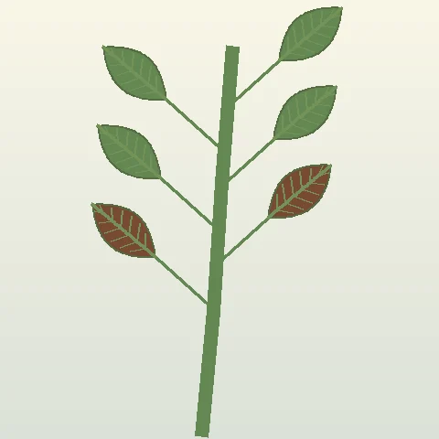

Natural aging
A few lower leaves drying out
This is one possible explanation. Compare the signs below with those on your plant.

What to look for
Compare dry leaves with recent growth and check for natural drying at the leaf base.
Possible causes and next steps
Healthy plants gradually replace old leaves. Recheck root moisture and light if losses accelerate.